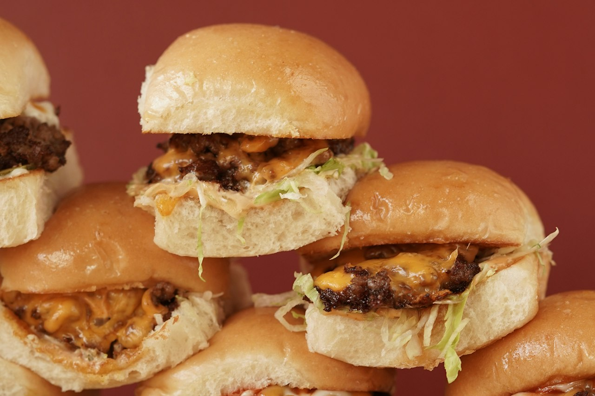

Wisconsin-Style Onion Smash Sliders
Smash patties pressed straight into a pile of sweated onions so they fuse and caramelize together, served on potato roll sliders with pickles, light mayo, and mustard.
Beef · Dinner · Quick · Comfort Food

Per serving
425kcal
30gprotein
Makes 4 servings. Whole batch: 1700 kcal, 120g protein.
Ingredients
Steps
- Salt the sliced onion lightly and let it sweat for 10 minutes. Squeeze out the excess moisture.
- Get a cast iron pan or griddle ripping hot. No oil needed.
- Drop a small pile of onions for each patty, set a beef ball on top, and smash hard and thin with a spatula or press. Season with salt and pepper.
- Cook until the edges are deeply browned and lacy, about 2 minutes. Scrape under the crust and flip so the onions are on the bottom.
- Add cheese if using, set the roll tops over the patties to steam, and cook 1 more minute.
- Build: mayo and mustard on the bottom roll, pickles, patty with onions, top roll.
Cook's notes
Smash once, early, and don't touch it again until the flip — the crust is the whole point. Slice the onions as thin as you possibly can; a mandoline helps.